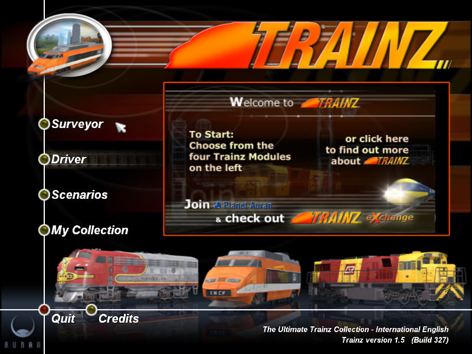
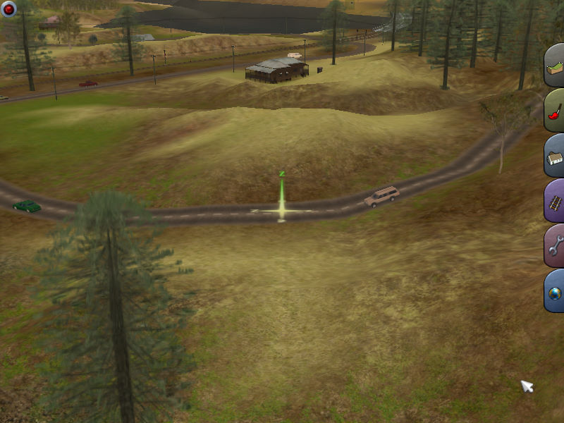

名稱：鐵道夢想家 (Ultimate Trainz Collection／Trainz Railway Simulator: Ultimate Collection，英文版)
簡介：Auran 2002年出品的鐵路建造營運模擬遊戲，由Strategy First代理發行。台灣則由
淇倫代理進口，但並未中文化 [待補]。


備註：本版為1.5版（淇倫代理版）
保護：光碟+序號（AUTC-4W3S-PUHU-GUBQ-EV9E-FKCC）
備註：VirtualBox無法執行，虛擬機請使用VMware。